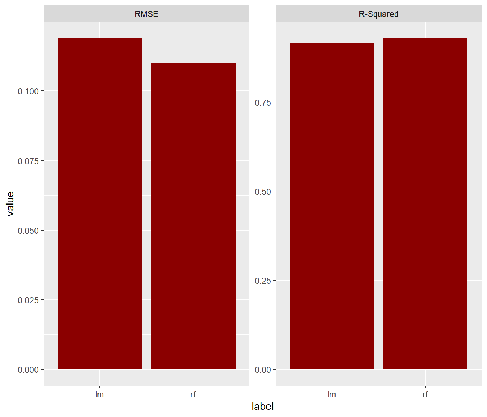
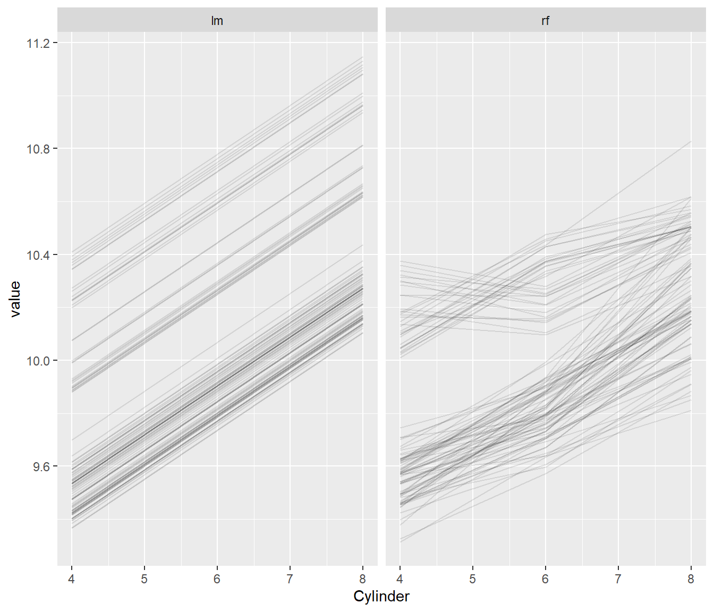
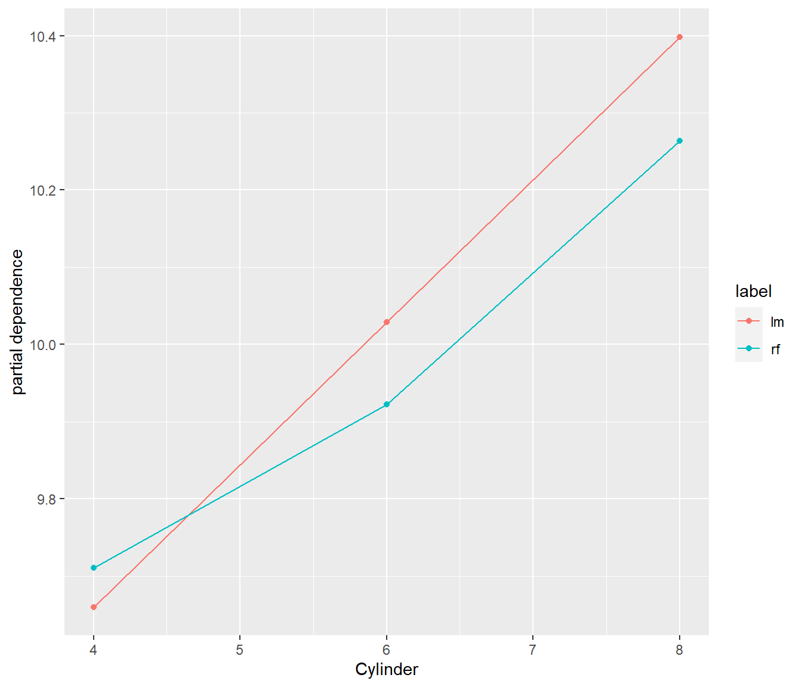
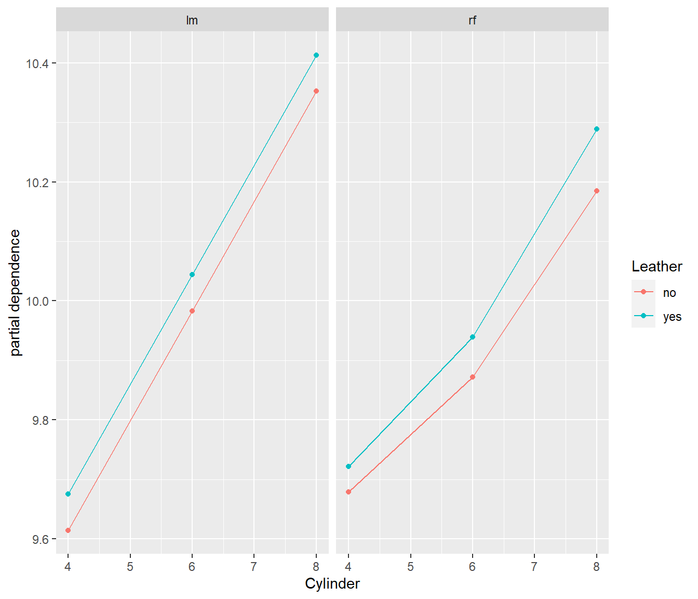
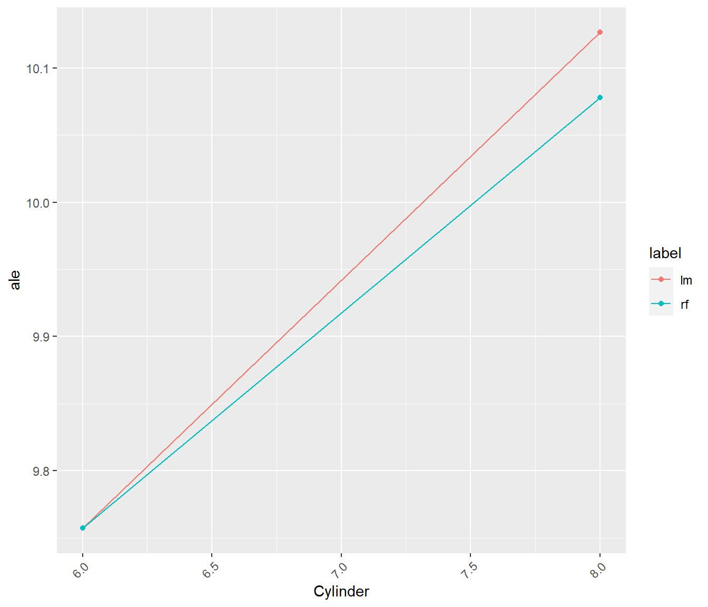
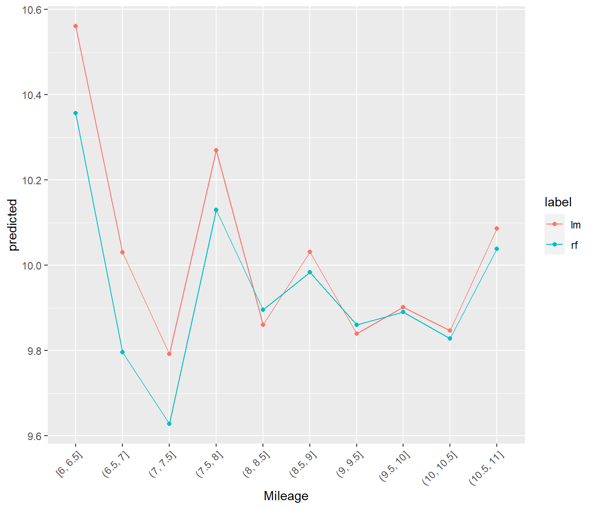
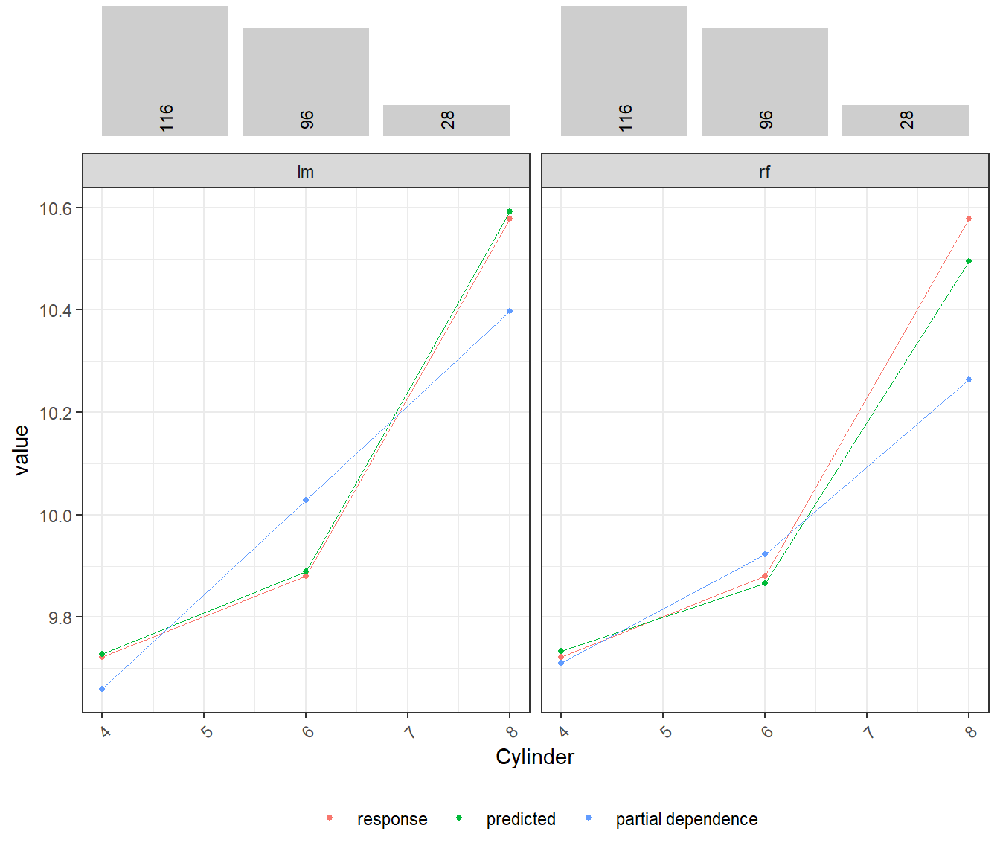

Using flashlight with h2o
Michael Mayer
2020-04-19
Source:../../vignettes/flashlight_h2o.Rmd
flashlight_h2o.Rmdlibrary(dplyr) library(MetricsWeighted) library(flashlight) library(caret) library(h2o) h2o.init() #> Connection successful! #> #> R is connected to the H2O cluster: #> H2O cluster uptime: 57 minutes 28 seconds #> H2O cluster timezone: Europe/Berlin #> H2O data parsing timezone: UTC #> H2O cluster version: 3.28.0.4 #> H2O cluster version age: 1 month and 26 days #> H2O cluster name: H2O_started_from_R_Michael_koq104 #> H2O cluster total nodes: 1 #> H2O cluster total memory: 3.19 GB #> H2O cluster total cores: 8 #> H2O cluster allowed cores: 8 #> H2O cluster healthy: TRUE #> H2O Connection ip: localhost #> H2O Connection port: 54321 #> H2O Connection proxy: NA #> H2O Internal Security: FALSE #> H2O API Extensions: Amazon S3, Algos, AutoML, Core V3, TargetEncoder, Core V4 #> R Version: R version 3.6.3 (2020-02-29) h2o.no_progress()
Introduction
This vignette shows how to use flashlight for interpretation of models trained with the h2o package.
Currently, the use of flashlight with h2o is limited by the fact that data modifications (e.g. for permutation importance) are done in R. This means that data sets are passed multiple times from R to h2o. This is too much overhead for data sets above 10’000 rows, say. In the future, this might be solved by moving data modifications to the h2o backend.
Training a linear regression and a random forest on the cars data set
The caret package contains some wonderful data sets for playing, e.g. the cars data set.
data(cars) str(cars) #> 'data.frame': 804 obs. of 18 variables: #> $ Price : num 22661 21725 29143 30732 33359 ... #> $ Mileage : int 20105 13457 31655 22479 17590 23635 17381 27558 25049 17319 ... #> $ Cylinder : int 6 6 4 4 4 4 4 4 4 4 ... #> $ Doors : int 4 2 2 2 2 2 2 2 2 4 ... #> $ Cruise : int 1 1 1 1 1 1 1 1 1 1 ... #> $ Sound : int 0 1 1 0 1 0 1 0 0 0 ... #> $ Leather : int 0 0 1 0 1 0 1 1 0 1 ... #> $ Buick : int 1 0 0 0 0 0 0 0 0 0 ... #> $ Cadillac : int 0 0 0 0 0 0 0 0 0 0 ... #> $ Chevy : int 0 1 0 0 0 0 0 0 0 0 ... #> $ Pontiac : int 0 0 0 0 0 0 0 0 0 0 ... #> $ Saab : int 0 0 1 1 1 1 1 1 1 1 ... #> $ Saturn : int 0 0 0 0 0 0 0 0 0 0 ... #> $ convertible: int 0 0 1 1 1 1 1 1 1 0 ... #> $ coupe : int 0 1 0 0 0 0 0 0 0 0 ... #> $ hatchback : int 0 0 0 0 0 0 0 0 0 0 ... #> $ sedan : int 1 0 0 0 0 0 0 0 0 1 ... #> $ wagon : int 0 0 0 0 0 0 0 0 0 0 ...
We then use the data to fit two types of regression to predict log(Price) by log(Mileage) and the other covariables. Car mades are already dummy coded. We will revert this in order to simplify the explainer process. Additionally, we represent some 0-1 dummies by nice, meaningful factors.
undo_dummies %
mutate(Price = log(Price),
Mileage = log(Mileage),
Made = undo_dummies(., c("Buick", "Cadillac", "Chevy", "Pontiac", "Saab", "Saturn"))) %>%
mutate_at(c("Cruise", "Sound", "Leather"), no_yes)
# Response and covariables
y flashlights
Then we collect all infos to build (multi-)flashlights, the core objects for explaining and comparing the models.
pred_fun
Explaining the models
Let us go through a selection of explainability tools.
Performance
The models perform essentially similar.
light_performance(fls) %>% plot(fill = "darkred")

Effects
Now, let’s look at a couple of ways to visualize effects.
# Individual conditional expectations (ICE). Using a seed guarantees the same observations across models light_ice(fls, v = "Cylinder", n_max = 100, seed = 54) %>% plot(alpha = 0.1)

# Partial dependence profiles light_profile(fls, v = "Cylinder") %>% plot()

light_profile(fls, v = "Cylinder", by = "Leather") %>% plot()

# Accumulated local effects light_profile(fls, v = "Cylinder", type = "ale") %>% plot()

# M-Plots light_profile(fls, v = "Mileage", type = "predicted") %>% plot()

# Response profiles, prediction profiles, partial dependence in one eff % plot() %>% plot_counts(eff, alpha = 0.3)
